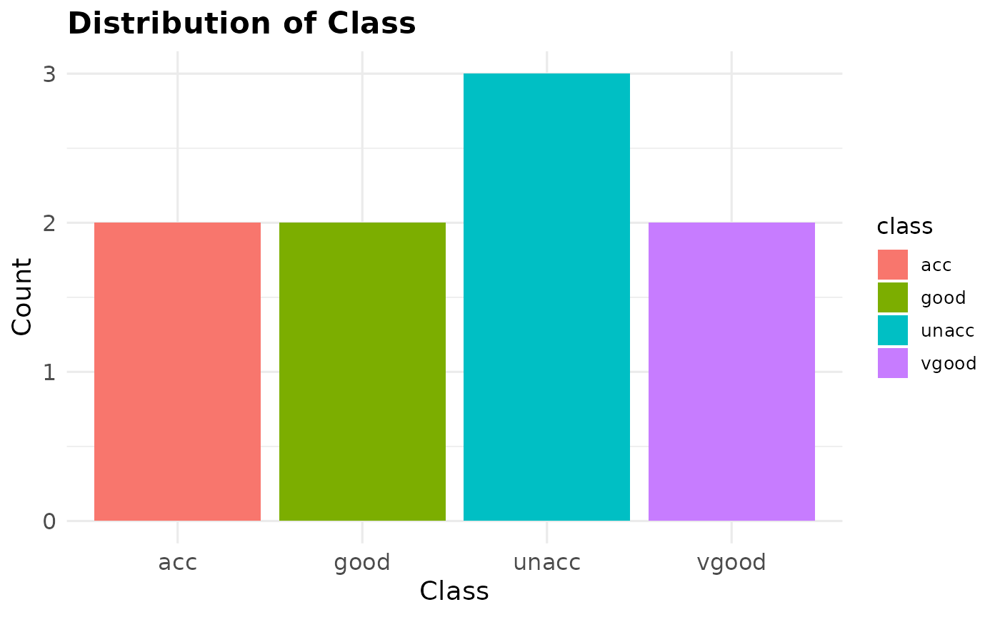
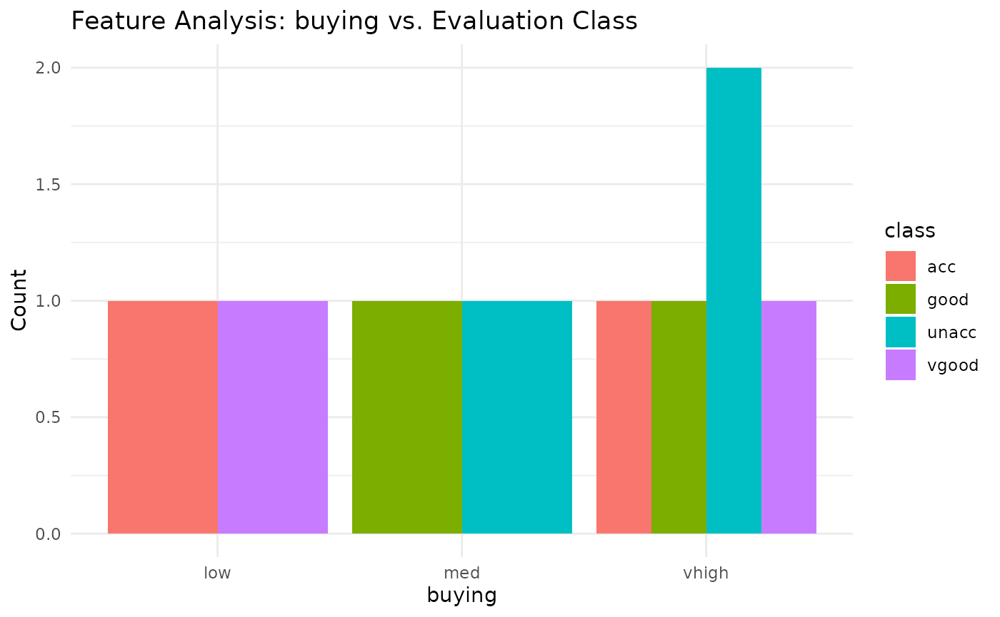
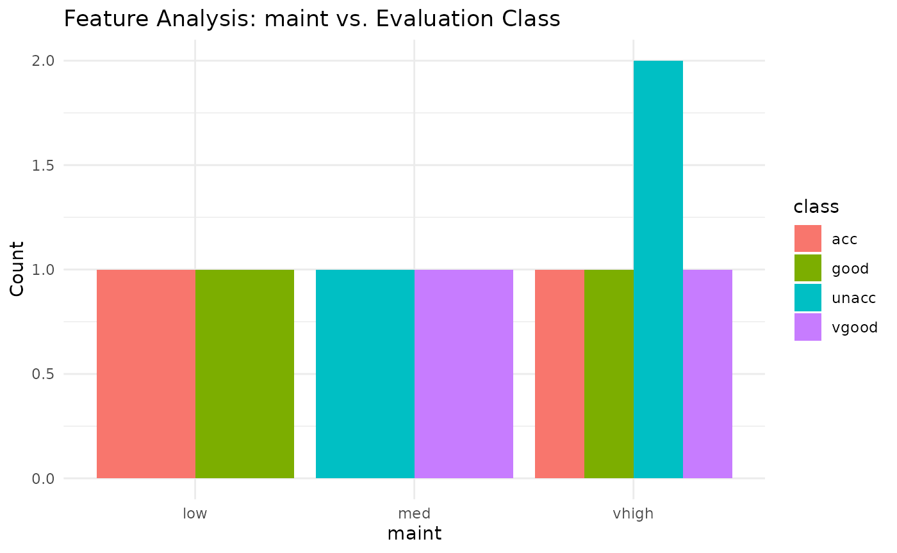
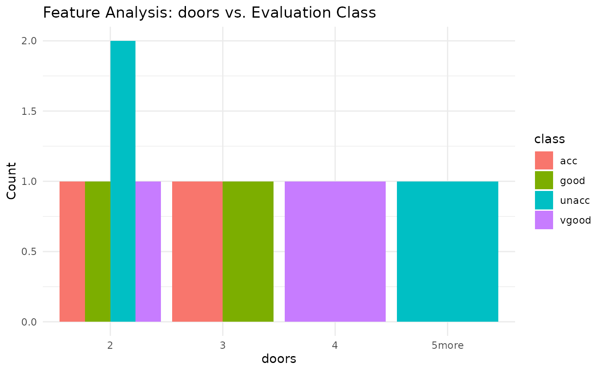
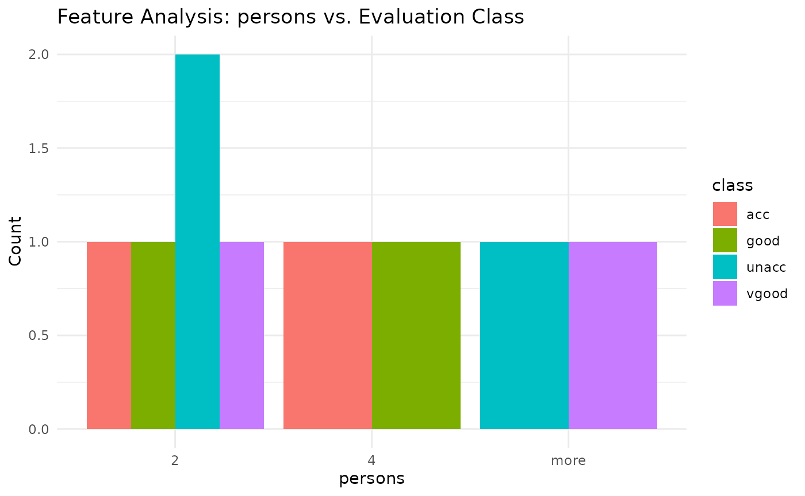
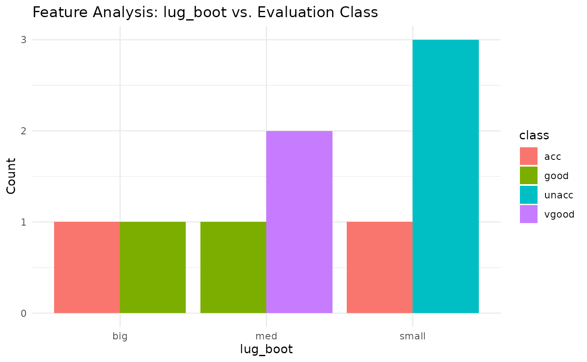
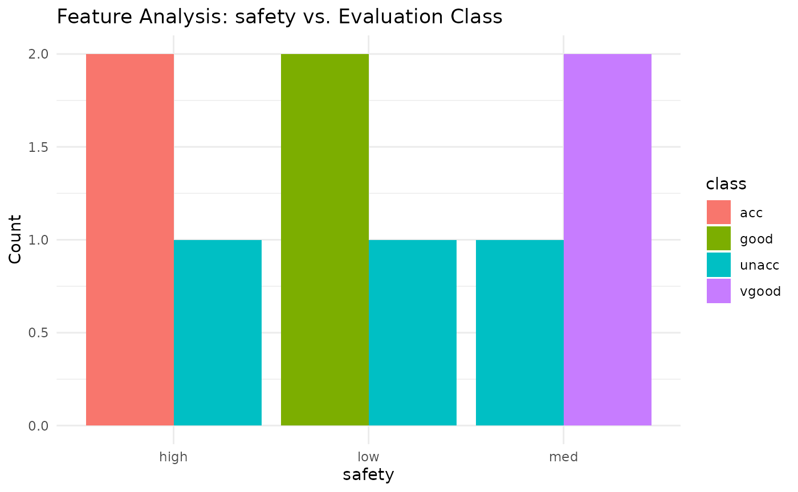

Introduction to predictcarcategory
my-vignette.RmdIntroduction
The predictcarcategory package provides tools for
exploratory analysis and predictive modeling related to car evaluation
categories. The package includes functions to generate bar plots for
categorical features, train random forest models, and visualize
confusion matrices. This vignette provides a full example using the
predictcarcategory package.
1. Sample data
We will begin by creating a sample data frame
df <- data.frame(
buying = c("vhigh", "vhigh", "vhigh", "vhigh", "vhigh", "low", "med", "low", "med"),
maint = c("vhigh", "vhigh", "vhigh", "vhigh", "vhigh", "low", "low", "med", "med"),
doors = c("2", "2", "2", "2", "2", "3", "3", "4", "5more"),
persons = c("2", "2", "2", "2", "2", "4", "4", "more", "more"),
lug_boot = c("small", "small", "small", "med", "med", "big", "big", "med", "small"),
safety = c("low", "med", "high", "low", "med", "high", "low", "med", "high"),
class = c("unacc", "unacc", "acc", "good", "vgood", "acc", "good", "vgood", "unacc")
)
df
#> buying maint doors persons lug_boot safety class
#> 1 vhigh vhigh 2 2 small low unacc
#> 2 vhigh vhigh 2 2 small med unacc
#> 3 vhigh vhigh 2 2 small high acc
#> 4 vhigh vhigh 2 2 med low good
#> 5 vhigh vhigh 2 2 med med vgood
#> 6 low low 3 4 big high acc
#> 7 med low 3 4 big low good
#> 8 low med 4 more med med vgood
#> 9 med med 5more more small high unacc2. Generate a bar plot for the target variable
generate_barplot(dataset = df, x = "class", x_name = "Class")
3. Generate a list of bar plot for the target variable against categorical variables
category_features <- c("buying", "maint", "doors", "persons", "lug_boot", "safety")
plot_list <- generate_feature_barplots(data = df, features = category_features)
plot_list
#> [[1]]
#>
#> [[2]]
#>
#> [[3]]
#>
#> [[4]]
#>
#> [[5]]
#>
#> [[6]]